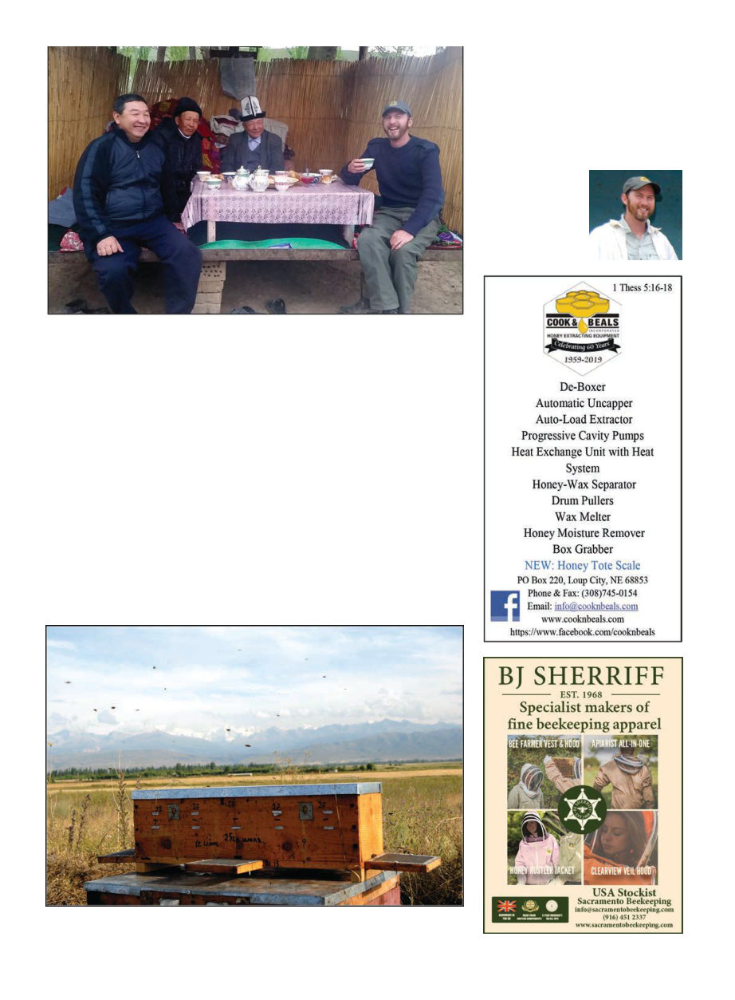

American Bee Journal
706
the right people and those people
favored their existing friends (and,
they alleged, adulterated the honey).
This was beyond my purview as a
technical expert, though I suggested
a strong national beekeeping federa-
tion could maybe help with these is-
sues. I was informed that such an
organization did exist but the people
I talked to did not believe it was ef-
fective. I left a suggestion with the
development office that they bring
some specialists in these larger issues
to help with the national federation.
I will admit, like probably most of
you, when I had first heard of Kyr-
gyzstan, my response was probably
“Klargobarkastan? That’s surely a
made-up place like Bashkortostan!”
But I came to love the kind, earnest,
hard-working people in this bucolic
place whose loveliness is perhaps
preserved by the fact that most in the
West have no idea what or where it is.
The fact that there is still a place on
this earth where people regularly live
in comfortable yurts in the mountains
with their hives and ride their horse
to go visit their neighbor warms my
heart.
By and by the second project end-
ed, and I had to leave the flowery
mountain pastures. A day’s drive
back to Bishkek, followed by 96 hours
of flying: Bishkek to Istanbul (inter-
rogated by secret police) to Dubai to
Melbourne (47 Fahrenheit) to Sydney
to Los Angeles (had to run to catch
connection) to Atlanta (first Five
Guys burger in years) to Managua,
Nicaragua (is that volcano supposed
to be smoking?), where another story
begins. (That story will appear in our
September issue).
Kris Fricke is the
“beekeeper-in-chief”
of Bee Aid Interna-
tional, www.beedev.
org, and also runs
Great Ocean Road
Honey Company in
Victoria, Australia.
Most families had a raised outdoor table like this. Other than us two on the outside,
most people must sit cross-legged at it. It was seemingly never too cold to prevent the
locals from eating at these outdoor tables.
Four mating nucs integrated into one box, each with an entrance on a different side. I
really like the detachable landing pads.